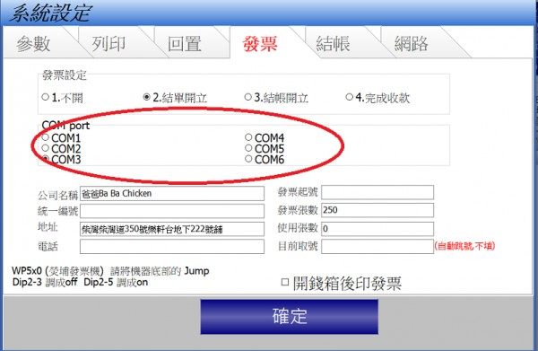
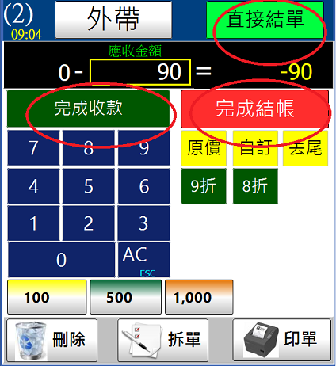
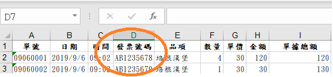

發票機推薦詢問
因為看版上 蠻多人在問 wp-560的
如果 沒有其他推薦就會買這台
只是版上 設定發票的部份 都沒有教學
看能否寫一個發票的 教學給大家看一下。
1 個回答
您好
1.先用POS發送的列印指令是Epson的格式,但多數人都買WP 560 ,站長也不知道為什麼,WP 560必須要調機器的Jump才能接收Epson的列印指令,調整方法如下
http://ico.tw/QA/index.php?qa=62
2.WP-560 的USB 會在電腦裡會模擬成Com port,您在裝置管理員應該能找到,然後在先用軟體上設置即可

3.發票列印時機有三個提供用戶選擇,
結單開立結帳開立,完成收款 分別對應結帳畫面三個按鈕

4.填好公司名稱 統編 電話 等資訊,會列印在發票上頭
5.每月申報營業稅,銷售明細表裡有發票號碼欄位,將此Excel檔交給記帳會計事務所,可減輕事務所大量的輸入工作

6.發票機在先用軟體設置的部分很容易,只要COM port設對即可,如何裝紙youtube上搜尋 WP 560 有一些教學可參考